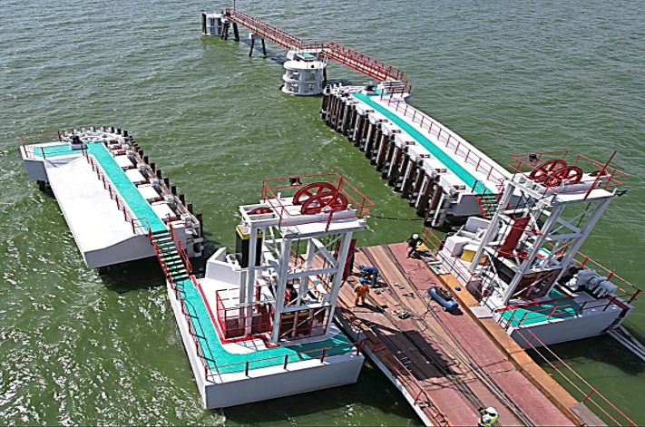
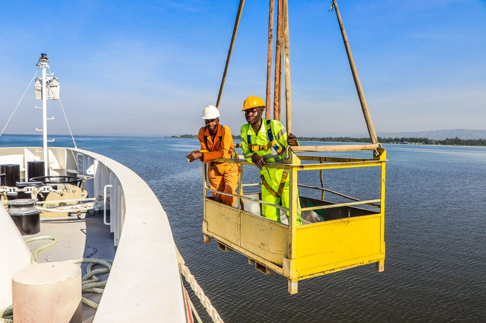
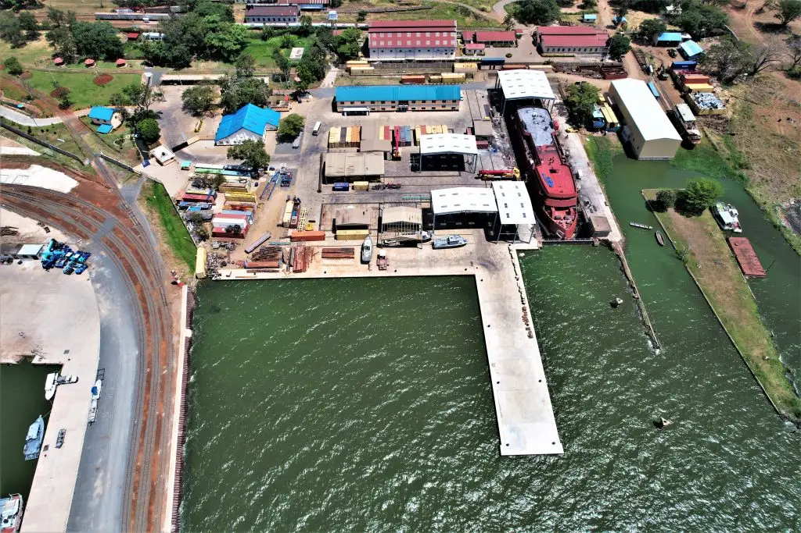

Vision
Lead the region in building ships
To be the leading catalyst in the development of the shipbuilding industry in Eastern Africa.
Who we are
Kenya Shipyards Limited (KSL) is a state corporation under the Ministry of Defence (MOD), established to lead and catalyze shipbuilding in Eastern Africa.


Vide Executive Order CAB/GEN.3/1/1 (60) dated 14 August 2020, the National Security Council approved the establishment of Kenya Shipyards Limited to address operational requirements of the Kenya Navy and MDAs and utilize excess capacity to generate revenue for the Government.
Kenya Shipyards Limited was incorporated on 29 September 2020 to lead and catalyze shipbuilding in Eastern Africa.
Vision
To be the leading catalyst in the development of the shipbuilding industry in Eastern Africa.

Mission
Establish the industry through world class construction, refit, maintenance, and repair, done in a sustainable way.
Mandate
Meet demand from the Kenya Navy, ministries and agencies with boats, and other public and private clients.
New vessels
Bring a hull up to date
Keep it in class
Return it to service
From the first yard works to MV Uhuru II entering the water.
The slipway site beside the port, later able to take a 4,000 tonne vessel.
A state corporation under the Ministry of Defence, approved by the National Security Council.

Dry dock, slipways, and quay prepared for larger vessels on Lake Victoria.
The Kisumu yard is launched and the hull of MV Uhuru II is formally started.
Slipway, buildings, workshops, and cranes are handed over for use.
The same workshops that serve hulls rehabilitate rail equipment.
The hull meets the water, about fourteen months after the keel was laid.
Ethics, honesty, and accountability. Decisions and records stay open to scrutiny.
Quality with rigor and efficiency. Work follows a method and a standard.
Creativity and mutual respect. Hull, workshop, and yard crews share one job.
Continuous improvement. Each vessel or repair is a chance to do the next one better.
Five ways the strategy is carried out.
ISO 9001:2015. Each job is planned, checked, recorded, and improved.
Agreements that bring technology, building assistance, and yard upgrades.
Global quality delivered in Kenya, with local suppliers and a local team.
Designs studied and changed for the lake, the coast, and the client.
The Navy, a county, or a port chooses KSL again for the next vessel.
Two yards: one beside the Port of Mombasa, one on Lake Victoria at Kisumu.
Beside the Port of Mombasa, so local and foreign vessels can be drawn from the water. It can take a 4,000 tonne vessel, 150 m long, with a draft of six metres.
106 m graving dock for 10,000 deadweight tonnes, two slipways for 1,300 tons, two quay walls totalling 315 m, and three mobile cranes.